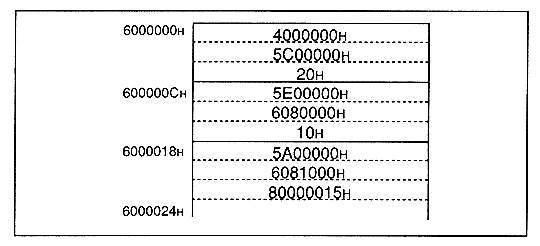

(a) DMA transfer of 20 H bytes from 4000000 H to 5C00000 H . (b) DMA transfer of 10 H bytes from 5E00000 H to 6080000 H . (c) DMA transfer of 15 H bytes from 5A00000 H to 6081000 H . DMA (indirect mode) can be executed by following the steps below.
(1) From the work RAM area (6000000 H ) Write data at the position.
Figure 2.8 Data writing example

(2) DMA parameter source address in the write address register (D0W) Write (6000000 H ). (3) Write the address addition value (101 H ) to the address addition value register D0AD. (Load the address addition value from CPU to address 25FE000C H . The details of the added value are described in the address added value in this section. With normal DMA, Specify 101 H as the address addition value. ) (4) Set the DMA mode to 1, the address update bit and the DMA activation factor as required. Defined and written to mode / address update / DMA activation factor register D0MD . For example, address update is set to hold mode and V-blank-IN is the activation factor If it is, write 1000000 H to D0MD. (CPU to address Load 1000000 H into 25FE0014 H . )